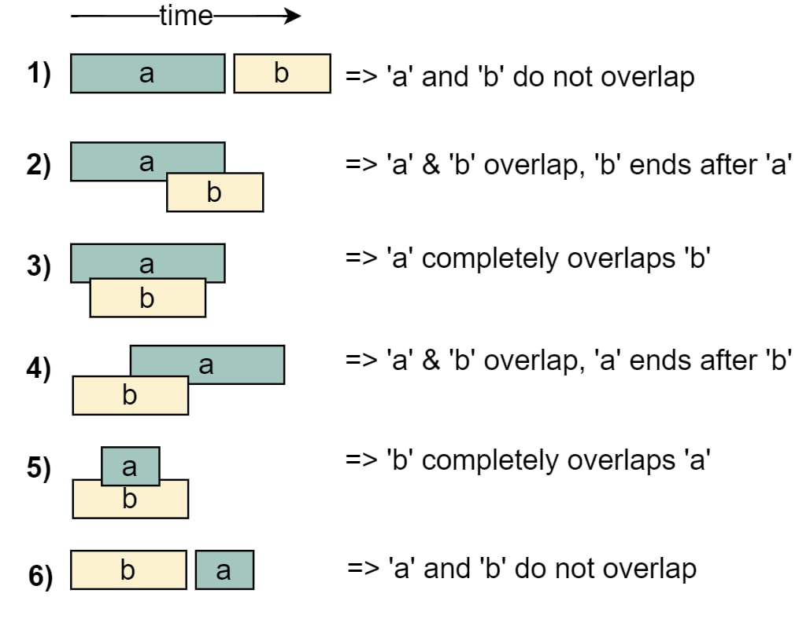

Coding#
Interview#
Problem#
ALWAYS understand the problem first!
What are some naive examples?
What data structure(s)?
1D array/string?
Specific structure (e.g., Tree)?
Entity relations (i.e., Graph)?
What algorithm pattern(s)?
Sequence search (Binary Search)?
Recursion (DFS & BFS)?
…
ASK clarification questions!
What are the TYPE, ROLE & DIMENSION of EACH element in EACH input & output?
Is the input VALID?
Is the input SORTED?
Is the input UNIQUE?
What’s the input RANGE?
Is the output a full structure or just a counter?
What are the edge cases?
Draw specific, large, mediocre EXAMPLE PAIRS (pos & neg) to confirm understanding with the interviewer.
Discussion#
COMMUNICATE with your interviewer!
Do NOT code.
State Brute-Force & its time & space complexity.
Optimize BUDs in naive solution: Bottlenecks, Unnecessary work, Duplicated work.
Use any unused info.
Walk through your entire approach in detail with the interviewer.
When stuck,
Use HashMap.
Solve base cases.
Solve subproblems.
Try different DS/As.
Data Structure#
Identify useful DSs.
Storage:
Array: Stores index-specific values.
HashSet: Stores unique values, ignores duplicates, reduces search time to \(O(1)\).
HashMap: Map 2 entities (e.g.,
defaultdict(list), defaultdict(set), Counter()).
Process:
Stack: Backward processing (DFS).
Queue: Forward processing (BFS).
Heap: Store, sort, find min/max at each step.
Question-specific:
LinkedList: (I suck at this. FML.)
Tree: DFS & BFS, Trie.
Graph: Entity relations.
For any question,
Implement & Test#
Walk through your code on your own.
Modify unusual parts.
Check null nodes.
Test small mediocre cases.
Test edge cases.
Test special cases.
Fix bugs as needed.
Be ready to discuss time & space complexity.
Array#
Two Pointer#
Left & Right#
Where: bi-directional, often on 1d array/string.
How:
left & right pointers (either facing from both ends, or expanding from middle).
Loop. Break when meet.
Tips:
Sort when necessary!
Use WHILE loop to go over elems that do not break condition.
3-pointer (or more) is always an option.
Question |
Solution |
|---|---|
Hint: FOR loop; expand both ends. |
|
Hint: FOR loop; expand one end first, then expand both ends. |
|
Hint: flip array, then flip both subarrays. |
|
Hint: only higher heights can lead to higher volume. |
|
Hint: red & blue pointers for reference, white pointer for iteration. |
Slow & Fast (Sliding Window)#
Where: uni-directional, 1d subarray/substring problem
How:
Init cache(s) with int/arr/map.
fastfor iteration,slowfor operation (threshold, comparison, etc.)MIN:
Expand
fastuntil condition is met.Shrink
slowuntil condition is broken.
MAX:
Expand
fastuntil condition is broken.Dynamically update cache to track condition. If condition is met again, stop
slow.
def sliding_window(args):
## Step 1: init
s = 0 ## slow pointer
cache = collections.Counter(nums) ## cache
## Step 2: iterate
for f in range(len(nums)): ## fast pointer
## Step 2.1 expand
cache[f] -= 1
## Step 2.2 shrink
while condition(f): ## condition state
cache[s] += 1
s += 1
## Step 3: return whatever the question asks for
return cache[-1]
Tips:
Plan out what to do at every step in every case. It’s OK to write them all out at the beginning and optimize afterwards. The key is to think carefully.
Don’t overthink over cases that do not matter. “collections” contains all keys by default, which comes in handy in some cases.
Question |
Solution |
|---|---|
1. Expand till f char is already visited. |
|
1. Expand till curr sum exceeds target. |
|
1. Expand till curr len >= max char freq + k. Keep track of char counts, max freq, curr len, and max len (i.e., the answer). |
|
1. Expand & update curr product till it exceeds k. |
|
1. Expand till score exceeds k. |
|
1. Expand till 0 is met. |
|
1. Expand till >=2 types of fruits in basket. |
|
0. Get p count. |
|
0. Get t count. Init #missing as len(t). |
Binary Search#
Credits to zhijun_liao and user8301z for helping me understand binary search a lot better.
Where: Find a function that maps elements in the left/right half to True and the other to False.
Although it’s mostly applicable to sorted arrays, this is NOT a necessary requirement.
How: There are 2 cases to consider. (originally 4, but I think 2 are sufficient for explanation.)
## Find First True (i.e., assume `lefts=False, rights=True`)
while l < r:
if condition: r = mid ## If True, ans is on the left (inclusive), so we go left.
else: l = mid+1 ## If False, ans is on the right, so we go right.
## Find Last True (i.e., assume `lefts=True, rights=False`)
while l < r:
if condition: l = mid ## If True, answer is on the right (inclusive), so we go right.
else: r = mid-1 ## If not, answer is on the left, so we go left.
These 2 templates are easily interchangeable by swapping the condition, so we end up with 1 universal template:
def binary_search(nums) -> int:
def condition(mid) -> bool:
pass
l,r = 0,len(nums)-1 ## NOTE: Pay attention to edge cases. Sometimes we need to change this boundary.
while l < r:
mid = l+(r-l)//2
if condition(mid): r = mid
else: l = mid+1
return l
Question |
Solution |
|---|---|
Condition: find the first element > its next element. ( |
|
Condition: find the first element > its next element. ( |
|
Condition: find the first element <= everything on its right. ( |
|
Condition: find the first index with a cumulative probability >= a random probability. ( |
|
Condition: find the first element >= input number. ( |
|
Condition: find the index where |
|
Condition: find the first element that distorts the duplicate order. |
|
Condition: find the first element that starts the subarray. |
|
Condition: find the smallest distance that has >=k pairs within its range. |
Merge Intervals#
Where: interval problems
How: depends on the question tbh.
{kind=link}
Tips:
There are only 2 conditions for 2 intervals to overlap: front.start <= back.end AND back.start <= front.end.
Use MIN/MAX to update merged
start/end.Sort by
start/endwhen necessary.
Question |
Solution |
|---|---|
0. Sort. |
|
0. Init left & right subarrays. |
|
0. Flatten & Sort a workhour array by start time. |
|
0. Init a pointer for each list. |
Dynamic Programming#
Where: The OG problem can be divided into smaller overlapping subproblems with an optimal substructure.
How:
Choose a method: Decide between the two main methods of DP: Top-Down (Memoization) and Bottom-Up (Tabulation).
Top-Down (Memoization): Break problem into smaller subproblems. Store results for each subproblem in an array/hash.
Bottom-Up (Tabulation): Start from the simplest subproblems and iteratively solve larger problems. Store results in a table (i.e., 2d array).
Define the state:
Variables: Determine what parameters can uniquely identify a subproblem, which will be used to index into your memoization table or array.
Transition: Define how to break your problem into subproblems.
Initialize (DP table & Base cases) & Iterate (based on the defined state transition).
def DP(args):
## Step 1: Init
dp = [0]*(n+1) ## DP table
dp[0] = 1 ## base case
## Step 2: Iterate
for i in range(1, n+1):
dp[i] = dp[i-1]+1 ## state transition
## Step 3: Return end case
return dp[n]
Question |
Solution |
|---|---|
DP: store the combinations to get the desired amount with the given coins. |
|
DP: store max attainable sum for the given index. |
|
DP: store #unique paths for the given point. |
|
DP: store whether there is a word in worddict that ends with index i in string s. |
|
DP: store min #coins for each amount till target. |
|
DP: store #combinations for each target till target. |
|
DP: store max common subsequence length for each index in each string. |
|
2 DPs: both sets store the sums of all subsets till this index. 1 for main store, 1 for looping. |
|
DP: store mappings of “(index, target) -> #ways to get to target from curr index”. |
|
DP: store max attainable len for each point. |
Linked List#
My peanut brain literally cannot understand linked list problems, so take this section with a grain of salt.
Where: linked list
Tips:
Problem: search, insert, delete, reverse, etc.
Diagram: if you can, draw them.
Pointer: carefully keep track of what your “prev” and “curr” pointers are doing at every single step. Are they doing add, remove, or rearrange nodes?
It involves 3 nodes instead of 2 to make a full reverse.
Dummies: don’t be afraid to init bunch of temp nodes. They are all O(1) anyway.
Edge cases: empty list, single node list, head/tail nodes, etc.
Question |
Solution |
|---|---|
1. Two pointers at head. |
|
1. Init a dummy node for the later merged list. Init a pointer for the list. |
|
1. Init a dummy node for the head. Init 2 pointers ( |
Stack & Queue#
Monotonic Stack#
Where: increasing/decreasing trend
Tips:
Understand clearly what the variable for comparison is. Use stack to store
the variable for comparison
another variable closely associated with it
If an element violates the condition, enter a WHILE loop. Continuously update and pop values from stack until
this element stays in condition.
the stack is EMPTY.
Else, append element to stack.
## 739. Daily Temperatures
def dailyTemperatures(self, temperatures: List[int]) -> List[int]:
ans = [0]*len(temperatures)
s = [] ## store indices of monotonically decreasing temps
for i,t in enumerate(temperatures):
while s and temperatures[s[-1]] < t: ## if a higher temp is met
ans[s[-1]] = i-s[-1] ## update ans
s.pop() ## pop till no higher temp
s.append(i) ## append unanswered index to stack
return ans
Question |
Solution |
|---|---|
Hint: Stack[0] = Max of Current sliding window. |
|
Hint: Stack = Indices of monotonically decreasing temperatures. |
Tree#
DFS#
Where: longest/specific search problems
How?
def dfs_pre(node):
if is_end_case(): return True
if break_condition(): return False
####### ACTION HERE ######
####### ACTION ENDS ######
dfs_pre(node.left)
dfs_pre(node.right)
def dfs_in(node):
if is_end_case(): return True
if break_condition(): return False
dfs_in(node.left)
####### ACTION HERE ######
####### ACTION ENDS ######
dfs_in(node.right)
def dfs_post(node):
if is_end_case(): return True
if break_condition(): return False
dfs_post(node.left)
dfs_post(node.right)
####### ACTION HERE ######
####### ACTION ENDS ######
Tips:
Choose carefully what you want: pre-order / in-order / post-order.
Each loop should ONLY focus on
the end/base case
the curr node
When returning bool, specify both True and False end/base cases.
Question |
Solution |
|---|---|
End Case: Leaf node. Add curr path sum to answer. |
|
End Case: None node. Append “#”. |
|
End Case: None node. Return. |
|
End Case: None arr. Return. |
|
End Case: None node. Return. |
|
End Case: None node. Return. |
BFS#
Where: shortest search problems
Tips: queue/priority queue
def bfs(node):
if not node: return
q = collections.deque([node])
while q:
node = q.popleft()
####### ACTION HERE ######
####### ACTION ENDS ######
if node.left: q.append(node.left)
if node.right: q.append(node.right)
Question |
Solution |
|---|---|
Basic BFS. |
|
Keep track of a boolean variable to switch subarray order. |
|
Action: Append ONLY the last node val to answer. |
Heap#
Where: get min/max fast
Action |
Time |
|---|---|
top() |
O(1) |
insert() |
O(logn) |
remove() |
O(logn) |
heapify() |
O(n) |
Question |
Solution |
|---|---|
Heap Item: count, char. |
Two Heap#
Where: scheduling, median, any problem that involves both min and max somehow.
Tips:
Set up 2 heaps:
small: max heap (i.e., negative min heap)
large: min heap
Use their length as storage condition
Do NOT pop when looking up items. Use index (0 for root).
## 295. Find Median from Data Stream
class MedianFinder:
def __init__(self):
self.small = [] ## heap for the smaller half (negative so that min heap works)
self.large = [] ## heap for the larger half
def addNum(self, num: int) -> None: ## O(logn)
## It doesn't really matter which one has one more value than the other. But be consistent during interview.
## In this case, we allow "small" to store one more value than "large" when #nums is odd.
if len(self.small)==len(self.large): ## if #nums is now even
heapq.heappush(self.small, -heapq.heappushpop(self.large, num)) ## push new num to "large", pop the smallest from "large", put it in "small"
else:
heapq.heappush(self.large, -heapq.heappushpop(self.small, -num)) ## push new num to "small", pop the largest from "small", put it in "large"
def findMedian(self) -> float: ## O(1)
if len(self.small)==len(self.large):
return (self.large[0]-self.small[0])/2
else:
return -self.small[0]
Graph#
Table: Data Structures
Representation |
Typical Form |
Add Edge |
Use Cases |
Space |
Edge-existence lookup |
|---|---|---|---|---|---|
Adjacency List |
|
|
Sparse graphs |
\(O(V+E)\) |
\(O(\deg^+)\) |
Adjacency Matrix |
|
|
Dense graphs |
\(O(V^2)\) |
\(O(1)\) |
Edge List |
|
|
Low memory |
\(O(E)\) |
\(O(E)\) |
Table: Algorithms
Algorithm |
Description |
Use Cases |
DS |
Time |
|---|---|---|---|---|
DFS |
Explore each path till end before backtracking. |
Detect cycles |
stack, set |
\(O(V)\) |
BFS |
Explore all nodes level-by-level. |
Shortest path in unweighted graphs |
queue, set |
\(O(V)\) |
Union-Find |
Maintain disjoint sets that can be quickly united and queried to track connectivity. |
Connectivity queries |
tree, array |
\(O(V \log V)\) |
Topological Sort |
Sort DAG (Directed Acyclic Graphs) so that each directed edge points from an earlier to a later node. |
Task scheduling |
queue, array, set |
\(O(V)\) |
Dijkstra’s Shortest Path |
Find shortest paths from src to all other nodes when edges have non-negative weights. |
GPS/Routing |
min-heap, set |
\(O(E \log V)\) |
Floyd-Warshall |
Find shortest paths between each node pair via DP over all intermediate nodes. |
All-pairs shortest paths in dense graphs |
matrix |
\(O(V^3)\) |
Prim’s MST |
Get MST by repeatedly adding the lightest edge that connects the tree to a new node. |
MST with a start node |
min-heap, set |
\(O(V^2 \log V)\) |
Kruskal’s MST |
Get MST by adding edges in increasing weight order while skipping those that form cycles. |
MST with nothing |
tree, array |
\(O(E \log E)\) |
DFS#
Graph: Adjacency list
Init:
visited: set
Procedure:
Repeat till end:
Start at a node & Mark it visited.
Action.
Recurse/Stack an unvisited neighbor.
graph = defaultdict(list) # adjacency list placeholder
visited = set()
def dfs_recursive(root):
visited.add(root)
####### ACTION HERE ######
####### ACTION ENDS ######
for neighbor in graph[root]:
if neighbor not in visited:
dfs_recursive(neighbor)
def dfs_iterative(root):
s = deque([root])
while s:
node = s.pop()
visited.add(node)
####### ACTION HERE ######
####### ACTION ENDS ######
for neighbor in graph[root][::-1]: # reverse for natural order (optional)
if neighbor not in visited:
s.append(neighbor)
def dfs_all_nodes():
for root in graph:
if root not in visited:
dfs(root)
Question |
Solution |
|---|---|
DFS Item: curr index. |
|
DFS Item: curr index, visited. |
BFS#
Graph: Adjacency list
Init:
visited: set
Procedure:
Enqueue root.
Repeat:
Dequeue a node & Mark it visited.
Action.
Enqueue all unvisited neighbors.
graph = defaultdict(list) # adjacency list placeholder
visited = set()
def bfs_iterative(root):
q = deque([root])
while q:
node = q.popleft()
visited.add(node)
####### ACTION HERE ######
####### ACTION ENDS ######
for neighbor in graph[node]:
if neighbor not in visited:
q.append(neighbor)
def bfs_all_nodes():
for root in graph:
if root not in visited:
bfs(root)
Question |
Solution |
|---|---|
Queue Item: node. |
|
Queue Item: curr #minutes, curr index (all rotten oranges). |
|
Queue Item: curr #steps, curr index, curr remaining #obstacles. |
|
Queue Item: curr #jumps, curr index. |
Union-Find#
Graph: Edge list
Init:
parent: arrayrank: array
Procedure:
find(x):Recursively find root once.
On the way back, rewire each visited node to point straight to the root (i.e., Path Compression) \(\rightarrow\) Flatten the tree.
union(x,y):Find both roots.
Union the roots by rank.
graph = [(u,v) for (u,v) in edges] # edge list placeholder
parent = [i for i in range(n)]
rank = [1 for _ in range(n)]
def find(x):
"""
If not root, keep finding root of curr parent & set it as new parent.
"""
if parent[x] != x:
parent[x] = find(parent[x])
return parent[x]
def union(x,y):
"""
If same parent, they are in the same set already.
If diff parents,
higher rank will be the parent.
if same rank, add one below the other.
"""
rx, ry = find(x), find(y)
if rx == ry: return
if rank[rx] > rank[ry]:
parent[ry] = rx
else:
parent[rx] = ry
if rank[rx] == rank[ry]:
rank[ry] += 1
# union all edges
for u, v in graph:
union(u, v)
## update parents once again
parent = [find(i) for i in range(n)]
Question |
Solution |
|---|---|
Hint: Loop edges. Union nodes. |
|
Hint: Loop accounts. Union owners. |
Topological Sort#
Graph: Adjacency list
Init:
indegree: arrayqueue: queuevisited: set
Procedure:
Compute in-degree.
Enqueue nodes with 0 in-degree.
Repeat till empty:
Dequeue & Action.
Decrement neighbors’ in-degree.
Enqueue neighbors with 0 in-degree.
graph = defaultdict(list) # adjacency list placeholder
def topologicalSort():
n = len(graph)
indegree = [0]*n
q = collections.deque()
visited = set()
# compute indegree
for _,vs in graph.items():
for v in vs:
indegree[v] += 1
# enqueue 0-indegree nodes
for i in range(n):
if indegree[i] == 0:
q.append(i)
# loop queue
while q:
node = q.popleft()
visited.add(node)
####### ACTION HERE ######
####### ACTION ENDS ######
for neighbor in graph[n]:
indegree[neighbor] -= 1
if indegree[neighbor] == 0:
q.append(neighbor)
return
Question |
Solution |
|---|---|
TopoSort. |
|
TopoSort + Cache. |
|
Hint: Max Time == Time for the last course. |
|
Hint: Leaves have only 1 edge. |
|
Hint: 0 cells have 0 distance. |
Dijkstra’s Shortest Path#
Graph: Adjacency list with edge weights
Init:
heap: list[(weight, node)]visited: set
Procedure:
Enheap (0, start).
Repeat till empty:
Pop node with shortest edge & Mark it visited.
If found end node, return path.
Push all unvisited neighbors with updated path weights.
graph = defaultdict(list) # adjacency list placeholder
def dijkstra(graph, start, end):
heap = [(0, start)]
visited = set()
# dijkstra
while heap:
(path_w, node) = heapq.heappop(heap) # get node & path
if node == end: return path_w # return path if found
visited.add(node)
for neighbor, edge_w in graph[node]: # check neighbor
if neighbor not in visited:
heapq.heappush(heap, (path_w + edge_w, neighbor))
return
Floyd Warshall#
Graph: Adjacency matrix
Init:
dist: list[list] (= graph edge weights)
Procedure: DP
Loop intermediate, start, end nodes:
Update dist mat with triangle rule.
graph = [[0]*n for _ in range(n)] # adjacency matrix placeholder
def floyd_warshall(graph):
n = len(graph)
dist = [[float("inf")]*n for _ in range(n)]
# set dist mat identical as graph mat
for i in range(n):
for j in range(n):
dist[i][j] = graph[i][j]
# floyd warshall
for k in range(n): # intermediate node
for i in range(n): # start node
for j in range(n): # end node
dist[i][j] = min(dist[i][j], dist[i][k]+dist[k][j]) # triangle rule
return dist
Prim’s MST#
Graph: Adjacency list with edge weights.
Init:
heap: list[(weight, node)]visited: set
Procedure:
Start with a node.
Repeat till all nodes included:
Pop node with shortest edge & Mark it visited.
Action.
Push all unvisited neighbors.
graph = defaultdict(list) # adjacency list placeholder
def primsMST(graph, start):
ans = 0
visited = set()
heap = [(0, start)] # (edge, start node)
## prim
while len(visited) < len(graph): # #edges should not exceed #nodes
edge, node = heapq.heappop(heap) # get node w shortest edge
visited.add(node) # prevent cycle
ans += edge # add edge to ans
for new_edge, neighbor in graph[node]: # check neighbor
if neighbor not in visited:
heapq.heappush(heap, [new_edge, neighbor])
return ans
Kruskal’s MST#
Graph: Edge list
Init:
parent: arrayrank: arrayi: int (index for sorted edges in graph)
Procedure:
Sort edges by weight.
Repeat till V-1 edges are chosen:
Get curr edge & nodes.
Union-Find on two nodes:
Find both parents.
If two parents in diff sets:
Add edge to MST.
Union both nodes.
Next index.
def KruskalMST(graph):
MST = []
parent = [i for i in range(n)]
rank = [1 for _ in range(n)]
i = 0 # index for sorted edges in graph
# sort graph by edge weight
graph = sorted(graph, key=lambda x: x[1])
# kruskal
while len(MST) < len(graph)-1: # #edges should not exceed #nodes
u,w,v = graph[i] # get nodes & edge
x, y = find(u), find(v) # get parents
if x != y: # prevent cycle
MST.append([u,w,v]) # append to MST
union(x, y) # now they are connected
i += 1 # on to the next edge in graph